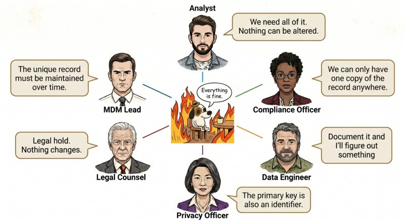
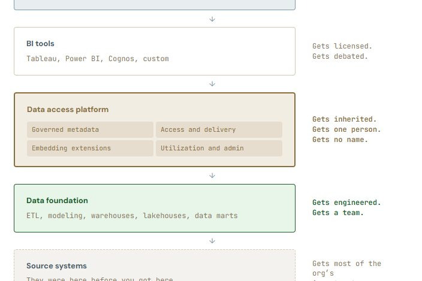

Data engineering

The Data Lifecycle Series
A three-part series on why a single retention rule pulls in opposite directions at once, and the architecture that resolves it.
-
Paper 1
Designing for the Data Lifecycle is not easy
One retention rule usually hides four distinct mechanisms and two different problems; conflating them is where implementation breaks.
-
Paper 2
The Best Pattern for a New Source
The Day Zero fork: one ingestion point splitting into a compliance vault and an analytical store, each governed under its own rules.
-
Paper 3
When the Request Is "Delete Me"
Why a subject-erasure request and routine analytical removal are the same operation, and the platform conditions that make it a managed step rather than an investigation.

The Data Access Platform
Two decades running analytics platforms at a large healthcare company, told through the Brooklyn Bridge: why organizations tolerate "good enough" data access for years, and what it finally takes to commit to the platform they actually need.